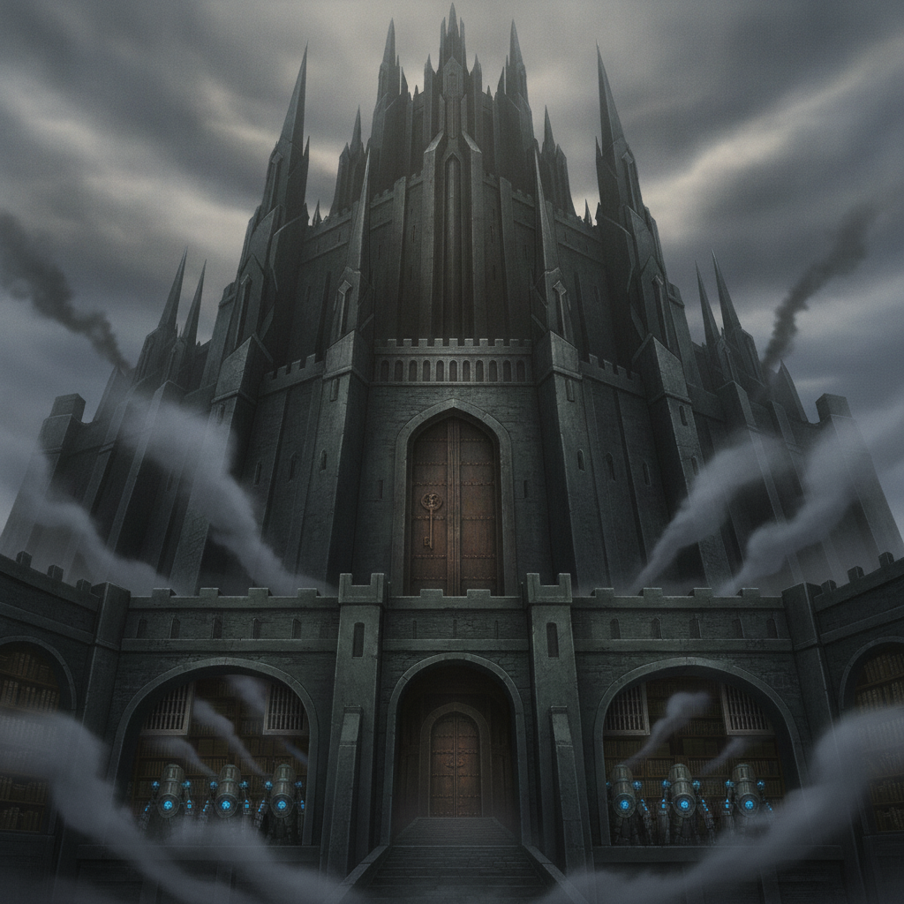

The Grey Hands' Assay-Hold is a fortress of grey basalt and cold iron. Its vaults hold Nullifier Governors and the grim ledgers of the severed. The air is a strange mix of incense and machine-oil.
Isolde's faith, once a shield, now becomes a weapon. She meticulously exposes corruption at the highest levels of the devout governments and the Assayer hierarchy.
While Isolde navigates the labyrinthine politics of her homeland, I work to expose corruption more broadly, feeding information to surviving stranded pairs.
Her precise, Sela-strong weave, once leashed by doctrine, is now unburdened. It is a terrifying and exhilarating thing to watch her wield her intellect and power to dismantle the system that created her.